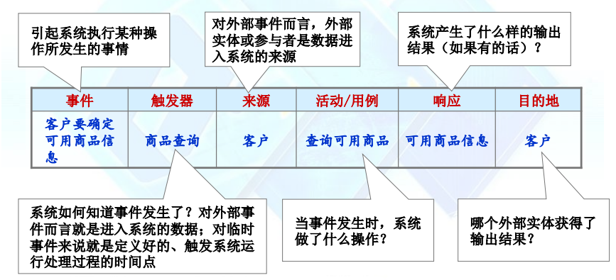
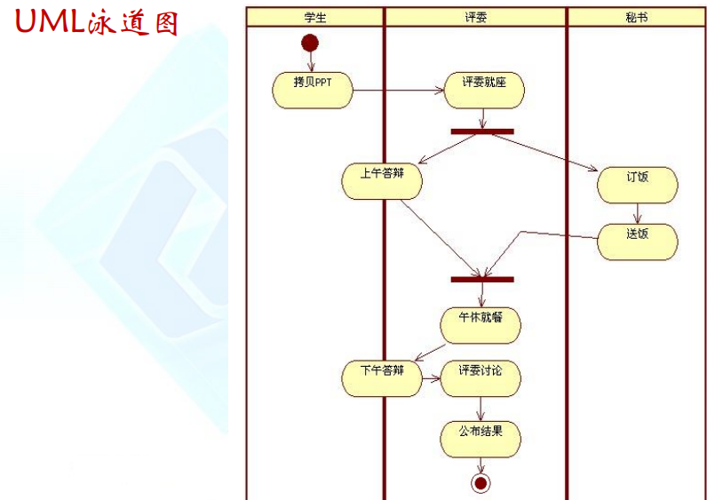
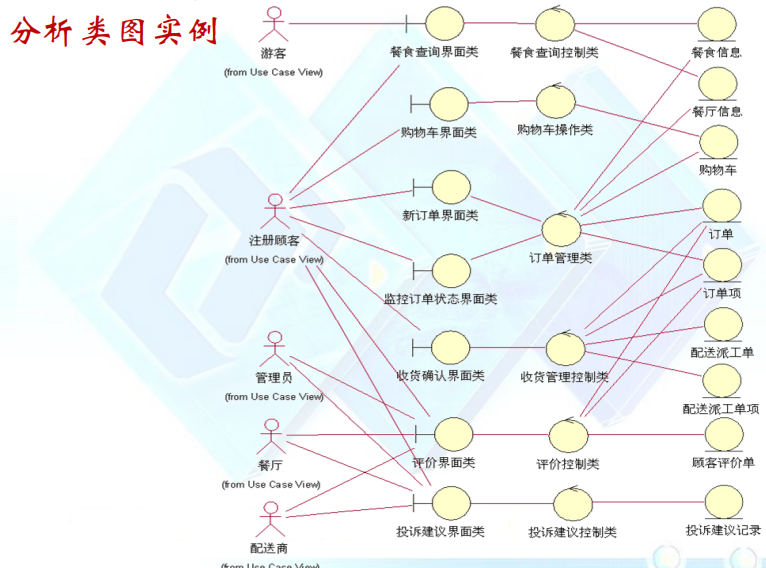
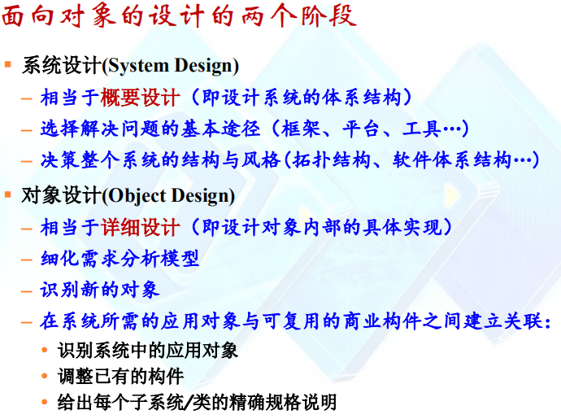

# 系统分析与设计
# 软件需求
软件需求：以一种清晰、简洁、一致且无二义性的方式，描述用户对目标软件系统在功能、行为、性能、设计约束等方面的期望，是在开发过程中对未来系统的约束
需求分类：
- 业务需求（愿景需求）
- 用户需求
- 功能需求
- 非功能需求
- 业务规则
- 数据定义
- 约束条件
- 外部接口需求
软件需求与需求获取：
- 需求获取
- 需求分析
- 需求规格说明
- 需求验证
- 需求管理
# 需求获取
通过与用户的交流，对现有系统的观察及对任务进行分析，从而开发、捕获和修订用户的需求
- 对用户进行分类
- 聆听每一类用户的需求
- 分析和整理所获取的需求
- 形成文档化的描述
- 签字确认
# 需求建模
# 事件和系统需求
事件：发生在某一特定的时间和地点、可描述并且系统应该记录下来的事情
事件和系统需求的关系：事件发生时需要系统做出响应，能列出所有这样的事件就可以搞清楚用户对系统的需求
# 事件的类型
外部事件：系统之外发生的事件，通常是由外部实体或系统参与者触发的
临时事件：由于到达某一时刻所发生的事件
状态事件：当系统内部发生了需要处理的情况时所引发的事件
# 事件列表

# 事物和系统需求
事物：
- 在传统的开发方法中，事物就是构成系统存储信息的相关数据
- 在面向对象的开发方法中，事物就是在系统中相互交互的对象
事件和事物的区别与联系：
事件 – 发生在瞬间，有一定的随机性
事物 – 客观存在，不以主观意志为转移
联系 – 事件的发生可以改变事物的状态或产生新的事物
# 事物列表
# 事物间的关系
# 事物的属性
属性：有关事物的一条特定信息
标示符（关键字）：能唯一标志事物的一个属性
复合属性：包括了许多相关属性的属性，如客户全名：名 + 姓
# 数据实体与对象
数据实体：在传统的系统开发方法中，事物被称为数据实体
对象：在面向对象的系统开发方法中，将事物称为对象
# 实体 - 关系图（ERD）
# 类图
面向对象的方法也强调对系统中所包含事物的理解
面向对象的方法给事物建立的模型即是 “类图”
“类” 和 “实体” 是明显区别的
# 用户故事和用例建模
# 用户故事
# 用例
用例 (Use Case)：表示系统所提供的服务或可执行的某种行为
用例模型的基本过程：
Step 1：识别并描述参与者 (actor)；
Step 2：识别用例 (use case)，并给出简要描述；
Step 3：识别参与者与用例之间的通讯关联 (Association)；
Step 4：给出每一个用例的详细描述
Step 5：细化用例模型
用例描述：
参与者之间的关系：

用例之间的关系：

# 活动图 & 泳道图

# 需求分析
对收集到的需求进行提炼、分析和审查，为最终用户所看到的系统建立概念化的分析模型
# 系统分析
# 结构化分析
# DFD 建模
数据流图：用处理、外部实体、数据流以及数据存储来表示系统需求的图表
DFD 片段：用一个单一处理符号表示系统响应一个事件的 DFD

# 典型错误
# 总结
# 数据字典（DD）
DD 是 DFD 的细节内容描述


# 实体关系图 - ERD
什么是 ERD 图
# 面向对象分析
# 建立静态结构模型


# 建立动态行为模型
# 系统设计
# 结构化设计
DFD 到系统结构图转换的基本模式：

# 面向对象设计

# 系统设计
- 设计系统的体系结构
- 识别设计元素
- 部署子系统
- 定义数据的存储策略
- 检查系统设计
# 包的设计
# 对象设计
# 总结
# 数据库设计
# ERD
# 物理数据库的设计
# 物理数据库提高效率的技巧
# OO 实体类图映射到 ERD